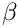
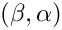

In the LOCA Continuation Tutorial, two turning point bifurcations were discoved in the Chan problem as the parameter was varied from to . Here we provide a brief tutorial on locating one of these turning points and tracking it in the second parameter . There are several methods in LOCA for computing turning points. The example here uses the minimally augmented formulation using the LAPACK direct solver for solving the augmented linear equations. See LOCA::TurningPoint::MinimallyAugmented::ExtendedGroup for a description of this algorithm. Also see LOCA::TurningPoint::MooreSpence::ExtendedGroup for the Moore-Spence turning point formulation. The code fragements discussed below can be found in ChanTPContinuation.C in the Chan subdirectory of the LOCA LAPACK examples directory.
ChanTPContinuation.C
Much of the setup for the turning point continuation problem is the same as for the equilibrium continuation discussed in LOCA Continuation Tutorial. Therefore we will only discuss the differences between the two setups here.
#include "LOCA.H"
#include "LOCA_LAPACK.H"
#include "ChanProblemInterface.H"
int main()
{
try {
int n = 100;
double alpha = 4.0;
double beta = 0.0;
double scale = 1.0;
int maxNewtonIters = 10;
// Create output file to save solutions
ofstream outFile("ChanTPContinuation.dat");
outFile.setf(ios::scientific, ios::floatfield);
outFile.precision(14);
By examining the plot in LOCA Continuation Tutorial, a turning point bifurcation occurs near for . We use these values as an initial set of parameter values near the bifurcation. We also set up an output file to store the continuation parameter, solution vector, bifurcation parameter, right null vector, measure of singularity of the Jacobian (sigma) and left null vector at each continuation step. The format is the same as in ChanContinuation.dat, consisting of a series of rows each containing numbers. Three rows are written for each continuation step, the first containing the continuation parameter and the components of the solution vector, the second containing the bifurcation parameter and the components of the right null vector, and the third containing sigma and the components of the left null vector.
// Create output file to save solutions
ofstream outFile("ChanTPContinuation.dat");
outFile.setf(ios::scientific, ios::floatfield);
outFile.precision(14);
// Save size of discretizations
outFile << n << std::endl;
// Create initial guess for the null vector of jacobian
Implementation of NOX::Abstract::Vector for STL std::vector<double> (using LAPACK for some computatio...
Definition NOX_LAPACK_Vector.H:37
The only additional set up required for turning point tracking in this problem is to compute an initial guess for the null vector of the Jacobian (for the Moore-Spence formulation) or the initial values for the and vectors in the minimally augmented formulation. Here we use a vector of all one's in all three cases.
nestedList.set("Bordered Solver Method", "LAPACK Direct Solve");
We now set to be the continuation parameter and to be the bifurcation parameter. We will vary from to , computing a value of for each corresponding value of . The initial value of is set internally by accessing the component "alpha" in the parameter vector p set below. In the bifurcation sublist, we indicate that we would like to do turning point tracking using the minimally augmented formulation, and pass ref-count pointers to the initial guess for the a and b vectors. Note that these must be casted to NOX::Abstract::Vector ref-count pointers.
Both arc-length continuation and the minimally augmented turning point method add one additional equation to be solved resulting in two nested bordered systems, each adding an additional row and column to the Jacobian matrix. We tell LOCA to combine these rows and columns into one bordered system with two augmented rows and columns (by setting the "Bordered Solver Method" of the "Stepper" sublist to "Nested") and instruct LOCA to use the LAPACK-specific linear solver for solving this 2-bordered system. Note that we must set the "LAPACK Direct Solve" choice twice , once in the "Bifurcation" sublist and once in the "Nested Bordered Solver" sublist. The first specifies the solver for the first and last continuation steps which use natural continuation instead of arc-length continuation. The last specifies the solver for the rest of the continuation steps.
// Create predictor sublist
Teuchos::ParameterList& predictorList =
locaParamsList.sublist("Predictor");
predictorList.set("Method", "Secant"); // Default
// Should use for Moore-Spence w/Salinger Bordering & Secant predictor
We again use a secant predictor to compute an initial guess at each continuation step. Because we are using the secant predictor, a different predictor must be used for the first step. The default is the "Constant" predictor which is fine for the minimally augmented formulation. However for the Moore-Spence formulation with Salinger bordering, we should use the "Random" predictor because the algorithm is singular. If the problem Jacobian does not depend on the continuation parameter, we can obtain highly ill-conditioned linear solves when not using the random predictor. A random predictor can be chosen for the last step for the same reason.
The rest of the driver setup is very similar to ChanContinuation.C We slightly tighten the convergence tolerance to demonstrate the well conditioning of the minimally augmented method. In this case we must use the LAPACK factory since we are using the LAPACK-specific solver method "LAPACK Direct Solve".
After running the example and reading the data file ChanTPContinuation.dat, we can plot the continuation parameter versus the bifurcation parameter to get a locus of turning point bifurcations in the  parameter space:
There are two branches of the bifurcation curve which come together to form a cusp. Starting at on one branch, traversing the cusp, and moving to on the second branch connects the two turning points shown in the LOCA Continuation Tutorial.
As in the continuation tutorial, the MATLAB code used to generate this plot is shown below.
% open output file
fid = fopen('ChanTPContinuation.dat');
% read dimension of discretization
n = fscanf(fid, '%d', 1);
beta = []; % array of continuation parameter values at each step
alpha = []; % array of bifurcation parameter values at each step
sigma = []; % array of singular estimates at each step
x = []; % array of solution components at each step
y = []; % array of right null vector components at each step
z = []; % array of left null vector components at each step
while ~feof(fid)
% read beta
beta = [beta fscanf(fid, '%g', 1)];
% read x
x = [x fscanf(fid, '%g', n)];
% read alpha
alpha = [alpha fscanf(fid, '%g', 1)];
% read y
y = [y fscanf(fid, '%g', n)];
% read sigma
sigma = [sigma fscanf(fid, '%g', 1)];
% read z
z = [z fscanf(fid, '%g', n)];
end
% close output file
fclose(fid);
% compute maximum of each temperature profile
maxT = max(x);
figure;
plot(beta,alpha,'bo-');
xlabel('\beta');
ylabel('\alpha ','Rotation',0);
title('Locus of Turning Points');
Generated on Thu Oct 9 2025 20:46:01 for NOX by 1.9.8